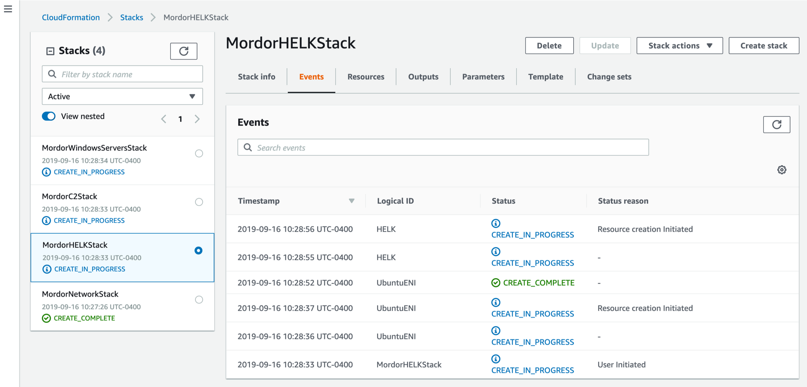
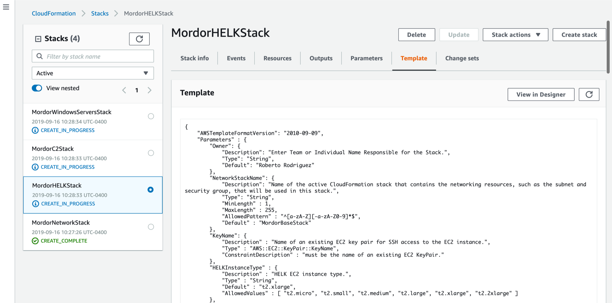
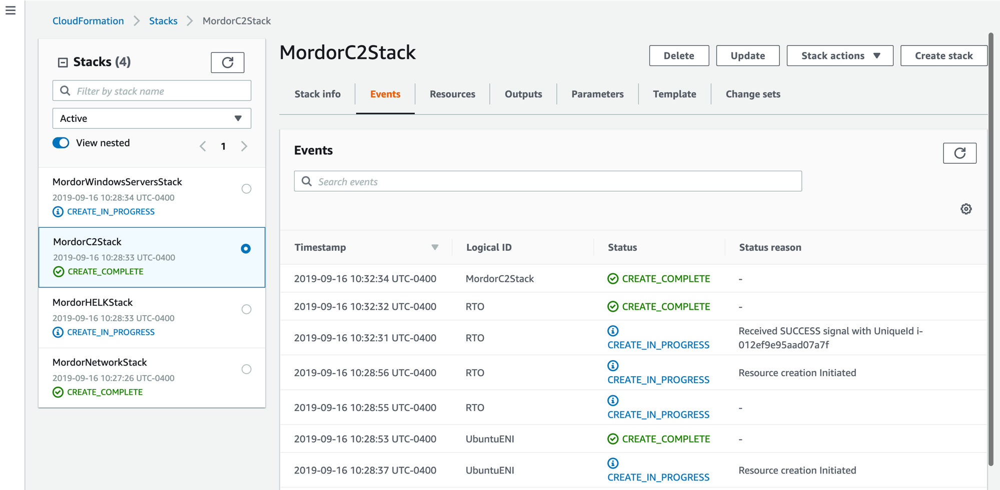
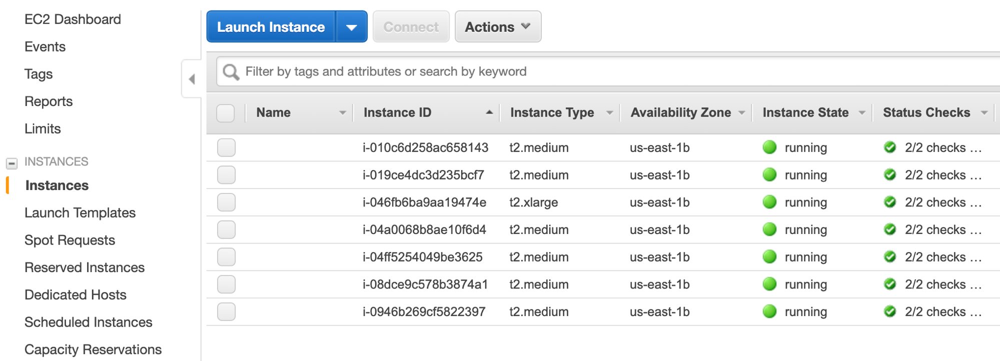
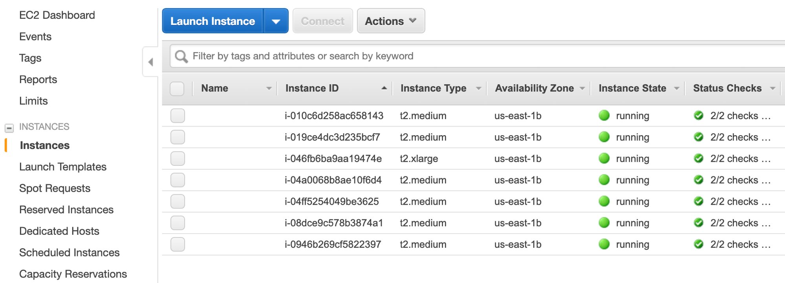

Shire CloudFormation Deployment¶
Templates¶
Template |
Format |
|---|---|
Mordor-Shire-EC2-Network |
|
Mordor-Shire-HELK-Server |
|
Mordor-Shire-C2-Server |
|
Mordor-Shire-Windows-DC |
|
Mordor-Shire-Windows-Workstations |
Pre-Requirements¶
An existing AWS Account (Free tier is recommended)
AWS CLI installed
EC2 Key Pair Available
20 mins of your day
Pre-Deployment¶
First, make sure you you git clone the main repo:
$ git clone https://github.com/Cyb3rWard0g/Blacksmith
$ cd Blacksmith/aws/mordor/shire
Pay attention with every command. There are only 2 things you will have to update with your own information:
<Key Pair Name>
<Restrict Location> (You can run curl ifconfig.io to get your public IP)
Manual Deployment¶
You can deploy each template stack manually by running all the commands below:
EC2 Network Resources¶
Estimated Time:
2minsDeployed in Parallel:
False
This template defines the virtual private cloud (VPC) parameters, security groups and subnets needed for the rest of the infrastructure. NOTE: Remember, you will have to wait until the stack is created before sending the next CloudFormation template over to be processed by AWS resources.
$ aws --region us-east-1 cloudformation deploy --template-file Mordor-Shire-EC2-Network.json --stack-name MordorNetworkStack --parameter-overrides KeyName=<Key Pair Name> RestrictLocation=<Home Public IP Address>/32
HELK Server¶
Estimated Time:
10minsDepends On:
MordorNetworkStack
$ aws --region us-east-1 cloudformation create-stack --stack-name MordorHELKStack --template-body file://./Mordor-Shire-HELK-Server.json --parameters ParameterKey=KeyName,ParameterValue=<Key Pair Name> ParameterKey=NetworkStackName,ParameterValue=MordorNetworkStack
C2 Server¶
Estimated Time:
7minsDepends On:
MordorNetworkStack
$ aws --region us-east-1 cloudformation create-stack --stack-name MordorC2Stack --template-body file://./Mordor-Shire-C2-Server.json --parameters ParameterKey=KeyName,ParameterValue=<Key Pair Name> ParameterKey=NetworkStackName,ParameterValue=MordorNetworkStack
Domain Controller¶
Estimated Time:
14minsDepends On:
MordorNetworkStack
$ aws --region us-east-1 cloudformation deploy --template-file Mordor-Shire-Windows-DC.json --stack-name MordorWindowsServersStack --parameter-overrides KeyName=<Key Pair Name> NetworkStackName=MordorNetworkStack
Workstations¶
Estimated Time:
7minsDepends On:
MordorNetworkStack, MordorWindowsServersStack
$ aws --region us-east-1 cloudformation create-stack --stack-name MordorWindowsWorkstationsStack --template-body file://./Mordor-Shire-Windows-Workstations.json --parameters ParameterKey=KeyName,ParameterValue=<Key Pair Name> ParameterKey=NetworkStackName,ParameterValue=MordorNetworkStack ParameterKey=DCStackName,ParameterValue=MordorWindowsServersStack
Automatic Deployment¶
You can also run all those commands via the simple bash script deploy-mordor-shire.sh available in the same folder.
$ ./deploy-mordor-shire.sh -h
Usage: ./deploy-mordor-shire.sh [option...]
-k set Key Pair Name
-p set Public IP Address
-h help menu
Examples:
./deploy-mordor-shire.sh -k aws-ubuntu-key -p x.x.x.x
Make sure you provide the name of your Key Pair and your public IP address:
$ ./deploy-mordor-shire.sh -k aws-ubuntu-key -p x.x.x.x
[MORDOR-CLOUDFORMATION-INFO] Using Key Pair Name: aws-ubuntu-key ...
[MORDOR-CLOUDFORMATION-INFO] Allow connections from public IP: x.x.x.x ...
[MORDOR-CLOUDFORMATION-INFO] Deploying EC2 Network resources ...
[MORDOR-CLOUDFORMATION-INFO] All other instances depend on it.
[MORDOR-CLOUDFORMATION-INFO] EC2 Network teamplate has been sent over to AWS and it is being processed remotely..
Waiting for changeset to be created..
Waiting for stack create/update to complete
Successfully created/updated stack - MordorNetworkStack
[MORDOR-CLOUDFORMATION-INFO] HELK Server template has been send over to AWS and it is being processed remotely ...
{
"StackId": "arn:aws:cloudformation:us-east-1:<user-id>:stack/MordorHELKStack/42e2b460-d88e-11e9-adcc-0a545e22b5be"
}
[MORDOR-CLOUDFORMATION-INFO] C2 Server template has been send over to AWS and it is being processed remotely ...
{
"StackId": "arn:aws:cloudformation:us-east-1:<user-id>:stack/MordorC2Stack/43557360-d88e-11e9-ac66-0ad9172a6ca8"
}
[MORDOR-CLOUDFORMATION-INFO] Deploying Domain Controller Instance ...
[MORDOR-CLOUDFORMATION-INFO] All other Windows instances depend on it.
[MORDOR-CLOUDFORMATION-INFO] Domain Controller template has been send over to AWS and it is being processed remotely ...
Waiting for changeset to be created..
Waiting for stack create/update to complete
Successfully created/updated stack - MordorWindowsServersStack
[MORDOR-CLOUDFORMATION-INFO] Windows Workstations and WEC server template has been send over to AWS and it is being processed remotely ...
{
"StackId": "arn:aws:cloudformation:us-east-1:<user-id>:stack/MordorWindowsWorkstationsStack/ef805a00-d88f-11e9-9d51-0a583df6bf38"
}
[MORDOR-CLOUDFORMATION-INFO] Please go to https://console.aws.amazon.com/cloudformation/home?region=us-east-1 to monitor your Mordor stacks and track deployment progress ..
Monitor Stack Build Logs¶
AWS CLI View¶
$ aws --region us-east-1 cloudformation describe-stack-events --stack-name MordorWindowsWorkstationsStack
AWS CloudFormation Console¶
You can use the AWS CloudFormation console to see all your stacks, their events, templates uploaded and more.

All the templates that you sent over to AWS will start being processed immediately

You can click on each stack and get more information about the deployment
You can also see the specific template mapped to each stack
Once a stack is complete you will be able to see it sending a successful signal back to the management console
Once all your instances are up and running you will be able to see them via the CloudFormation and the EC2 instances dashboard
 

Connect to Instances¶
SSH (Linux)¶
$ ssh -v -i <Private Key File>.pem ubuntu@<public-DNS-name>
RDP (Windows)¶


{kind=link}
{kind=link}
{kind=link}
{kind=link}
Delete Stacks¶
$ aws --region us-east-1 cloudformation delete-stack --stack-name MordorWindowsServersStack